How To Integrate
- Place QtAndroidTools lib to your project dir and include it in .pro file
include(QtAndroidTools/QtAndroidTools.pri)
- Assign in you .pro file varialble ANDROID_PACKAGE_SOURCE_DIR before include QtAndroidTools/QtAndroidTools.pri, for ex.
ANDROID_PACKAGE_SOURCE_DIR = $$PWD/android
- Always before include QtAndroidTools/QtAndroidTools.pri add the define labels for specify the library tools you want to include/exclude from your project compilation:
DEFINES += \ QTAT_APP_PERMISSIONS \ QTAT_APK_EXPANSION_FILES \ QTAT_APK_INFO \ QTAT_SCREEN \ QTAT_SYSTEM \ QTAT_BATTERY_STATE \ QTAT_SIGNAL_STRENGTH \ QTAT_IMAGES \ QTAT_NOTIFICATION \ QTAT_ADMOB_BANNER \ QTAT_ADMOB_INTERSTITIAL \ QTAT_ADMOB_REWARDED_VIDEO \ QTAT_PLAY_STORE \ QTAT_GOOGLE_ACCOUNT \ QTAT_GOOGLE_DRIVE \ QTAT_SHARING - In the main() body insert the call for initialize the library
QtAndroidTools::InitializeQmlTools();
ApkExpansionFiles
Help in manage the apk expansion files download
Apk upload size limit is currently 100MB but in case your app require more data the Android Console allow to "attach" two files connected to your app. Official documentation about this feature is here, is strongly suggested to read it for allow a better comprension about how to use this tool. Usually the expansion files are downloaded by the Google Play together with the main app but in case the user delete it or some other problem occurs and the file will not be available anymore the app have to download again usually at startup. In this phase is required the java code of the two libraries explained in the documentation, the Google Play Licensing Library and the Google Play APK Expansion Library. However, at the time this post was written, there are a couple of problems. The official documentation suggest to get these libraries through the Android SDK Manager and then create two modules using the libraries just obtained. The problem here is the code of there libraries is very very old and use some deprecated dependencies making difficult the compilation using Qt Creator. It exist an updated version of these two libraries always developed by Google here and here. However also these two latest libraries are not supported by a long time and doesn't work very well in the latest versions of Android, from 8 and above. For this reasons this tool implement the two updated version community supported better-apk-expansion and better-licensing that make the same job but are updated enough for support the new notify feature of Android 8. I only made a small modify for support the Qt multi language engine. In the version inside the tool the java library ask to the C++ level for the info text to use in the Android notify label allowing the Qt language selector to select the correct language string.
Remember for have the download library working as expected you have to set the following permission in your app:
<manifest ...>
<!-- Required to access Google Play Licensing -->
<uses-permission android:name="com.android.vending.CHECK_LICENSE" />
<!-- Required to download files from Google Play -->
<uses-permission android:name="android.permission.INTERNET" />
<!-- Required to keep CPU alive while downloading files
(NOT to keep screen awake) -->
<uses-permission android:name="android.permission.WAKE_LOCK" />
<!-- Required to poll the state of the network connection
and respond to changes -->
<uses-permission
android:name="android.permission.ACCESS_NETWORK_STATE" />
<!-- Required to check whether Wi-Fi is enabled -->
<uses-permission android:name="android.permission.ACCESS_WIFI_STATE"/>
<!-- Required to read and write the expansion files on shared storage -->
<uses-permission
android:name="android.permission.WRITE_EXTERNAL_STORAGE" />
...
</manifest>
Also note, in case your Android app is target for version 23 or above you have to explicitly ask for the WRITE_EXTERNAL_STORAGE permission cause this is one of the "dangerous" permission. You can use the other AppPermissions tool available in this library. Also you have to correctly the various part of the library by addicting these lines inside your AndroidManifest.xml file:
<application> ..... <service android:name="com.google.android.vending.expansion.downloader.impl.DownloaderService" android:enabled="true"/> <receiver android:name="com.google.android.vending.expansion.downloader.impl.DownloaderService$AlarmReceiver" android:enabled="true"/> </application>
Please note from now it's assumed you have read the documentation and already know the type and the format of expansion files is possible to upload and how the licensing engine work. First initialization is the following:
QtAndroidApkExpansionFiles.base64PublicKey = "app_public_key_here"; QtAndroidApkExpansionFiles.salt = [1,2,3,4,5,6,7,8,9,10,11,12,13,14,15,16,17,18,19,20]; QtAndroidApkExpansionFiles.main.version = 1; QtAndroidApkExpansionFiles.main.size = 123456789; QtAndroidApkExpansionFiles.patch.version = 1; QtAndroidApkExpansionFiles.patch.size = 123456789;
The base64PublicKey can be found in the Android Console app info and the salt is a random array of 20 bytes you have to generate by yourself. This is required for encrypt your data stored of the server. Version and size is required for identify your main and patch file. You can upload only the main file (and then you have to set only the main fields), these info are used to check if the current expansion files eventually already present in the device correspond in term of version number and file size.
Once configured the basic info you can check the operation to make by calling the following function:
QtAndroidApkExpansionFiles.startDownloadFiles()
If this function will return:
QtAndroidApkExpansionFiles.APKEF_NO_DOWNLOAD_REQUIRED
mean your expansion file are already available in the device than there is nothing to do, you can proceed with the app execution. In case of return:
QtAndroidApkExpansionFiles.APKEF_DOWNLOAD_STARTED QtAndroidApkExpansionFiles.APKEF_LVL_CHECK_REQUIRED
mean the apk expansion files download is started than you have to manage the download progress info. A download notify will be showed in the system status bar but your app should also show a progress control to inform the user regarding the operation in progress and that he have to wait. All other return codes are basically error conditions, check the library sources to see all the possible error types.
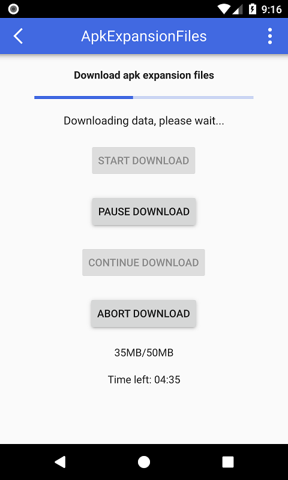During download phase the tool generate two signals updating you about current status as follow:
Connections {
target: QtAndroidApkExpansionFiles
onDownloadStateChanged: {
switch(newState)
{
case QtAndroidApkExpansionFiles.STATE_COMPLETED:
...
break;
case QtAndroidApkExpansionFiles.STATE_FAILED_UNLICENSED:
case QtAndroidApkExpansionFiles.STATE_FAILED_FETCHING_URL:
case QtAndroidApkExpansionFiles.STATE_FAILED_SDCARD_FULL:
case QtAndroidApkExpansionFiles.STATE_FAILED_CANCELED:
case QtAndroidApkExpansionFiles.STATE_FAILED:
...
break;
}
}
onDownloadProgress: {
var time = new Date(timeRemaining);
downloadProgressBar.to = overallTotal;
downloadProgressBar.value = overallProgress;
downloadSizeLabel.text = (overallProgress / (1024*1024)).toFixed(2) + "MB/" + (overallTotal / (1024*1024)).toFixed(2) + "MB";
downloadTimeLabel.text = "Time left: ";
if(timeRemaining > 1000 * 60 * 60)
downloadTimeLabel.text += ("0" + time.getHours()).substr(-2) + ":" + ("0" + time.getMinutes()).substr(-2);
else
downloadTimeLabel.text += ("0" + time.getMinutes()).substr(-2) + ":" + ("0" + time.getSeconds()).substr(-2);
}
}
onDownloadStateChanged have the newState param informing about the download state changed. Check the sources for all the possible values. onDownloadProgress report info about the download process like current size and time left. Once download completed or if your expansion files are already available is possible to retrieve the full path of both files by use the following functions:
QtAndroidApkExpansionFiles.mainFileName() QtAndroidApkExpansionFiles.patchFileName()
During download phase always is possible to abort, stop and restart download by using the functions below:
QtAndroidApkExpansionFiles.abortDownload() QtAndroidApkExpansionFiles.pauseDownload() QtAndroidApkExpansionFiles.continueDownload()
A specific note regarding the function getString(). It return an info string connected with the current download status and some other info. It's used internally to pass correct language string to the java library but you can use also for the main interface as in demo example.
AppPermissions
This tool allow to request Android app permissions in an easier way.
From Android version 23 (Marshmallow) there are a list of special permission called "dangerous" because are directly connected to personal data of the user like calendar, contacts list and so on (official documentation here). If your app is target for this version and above and your manifest file contains one of the dangerous permissions you have to explicitly get the user authorization for have such permission granted. In the demo app four of these dangerous permission will be requested as follow:

There are two functions for request permissions, one accept a list of permissions for allow a unique request for all and another can be used to ask for a single permission only. In this example the multiple request function will be used as follow:
import QtAndroidTools 1.0 ... readonly property var permissionsNameList: ["android.permission.WRITE_EXTERNAL_STORAGE","android.permission.READ_CALENDAR","android.permission.READ_PHONE_STATE","android.permission.READ_CONTACTS"] ... QtAndroidAppPermissions.requestPermissions(permissionsNameList)
The call of this function will have a result to show the system message informing the user the app require the specific permissions and ask for approval:
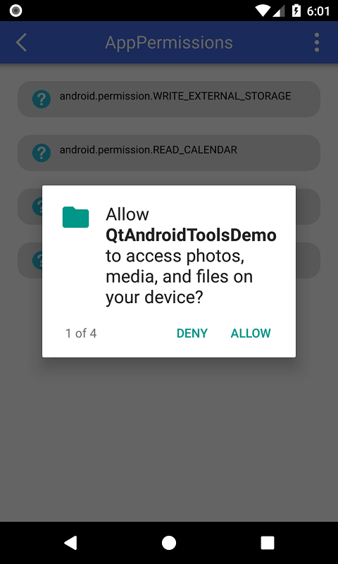Once the user will finish to make the choice a signal will be generated with a list of struct as param as follow:
Connections {
target: QtAndroidAppPermissions
onRequestPermissionsResults: {
for(var i = 0; i < results.length; i++)
{
if(results[i].granted === true)
{
setPermissionGranted(results[i].name, true);
}
else
{
if(QtAndroidAppPermissions.shouldShowRequestPermissionInfo(results[i].name) === true)
{
if(results[i].name === permissionsNameList[0])
requestPermissionWRITE_EXTERNAL_STORAGE.open();
else if(results[i].name === permissionsNameList[1])
requestPermissionREAD_CALENDAR.open();
else if(results[i].name === permissionsNameList[2])
requestPermissionREAD_PHONE_STATE.open();
else if(results[i].name === permissionsNameList[3])
requestPermissionREAD_CONTACTS.open();
}
else
{
setPermissionGranted(results[i].name, false);
}
}
}
}
}
Each item in the list contain the param name containing the permission string name and the boolean field granted informing if the user allowed the app to get the permission or not. Please note, if you app will be target under version 23 this signal will be emitted immediately without show any messagebox and, obviously, with all the permission automatically granted. This for allow the code working in the same way independently by the Android target version selected. In case the user don't granted a permission this special call is used in the code:
QtAndroidAppPermissions.shouldShowRequestPermissionInfo(...)
This function is quite particular and return true only in the case a first attempt to ask to permission has been denied. Basically it "suggest" to show a message to the user explaining why your app need the specific permission before retry to ask for permission again:
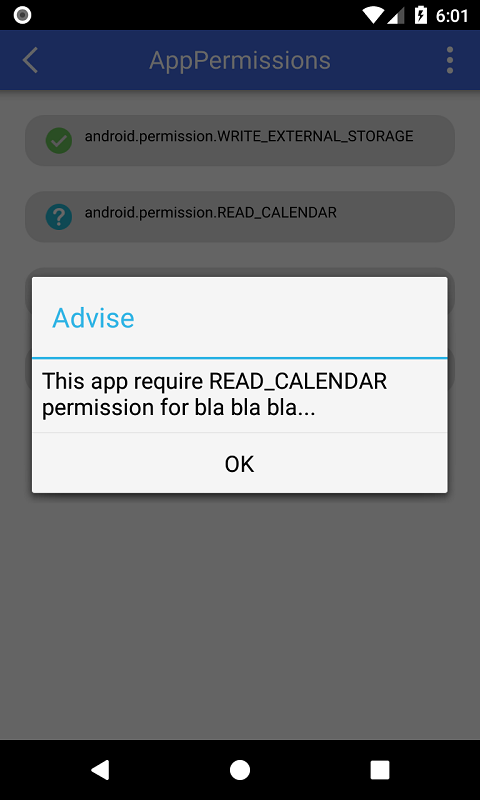Once explained the reasons you can ask again for the same permission by using this time the single request function:
QtAndroidAppPermissions.requestPermission(...)
Now please note a very important particular. Theoretically you can ask for the same permission infinitely, however from the second time you ask for the same permission the system message window will appear as following:

As you can note in this case there is a checkbox allowing the user to not be annoyed by your request anymore (Don't ask again). If the user will check it and will deny the request again any next request for the permission will be automatically denied without show any message than be careful in decide when ask for permission and, above all, to explain very clearly why you need that permission. After the second try the signal reporting the choice result will be generated again with the updated situation:

AdMobBanner
This tool allow to show AdMob banner inside QML app.
Official documentation about AdMob banner is here, please read before continue for understand the options exported by the tool. Remember for allow banner to be loaded your app need the following permissions:
android.permission.INTERNET android.permission.ACCESS_NETWORK_STATE android.permission.WRITE_EXTERNAL_STORAGE
In add of this you have to install the AdMob required packages through Android SDK Manager. The packages you have to install are the following:
- Google Repository
- Google Play services
- Support Repository
Than you have to add the following dependencies into your app gradle file:
dependencies {
....
implementation 'com.google.android.gms:play-services-ads:16.+'
}
Banner is showed inside the following QML item:
import QtAndroidTools 1.0
QtAndroidAdMobBanner {
id: banner
unitId: "admob-banner-unit-id"
type: QtAndroidAdMobBanner.TYPE_BANNER
keywords: ["keyword_1", "keyword_2", "keyword_3"]
}
The unitId is the string generated when you create a new ad unit inside the AdMob site. It's used to identify the ad connected to your app. Using this id you can know how much you earn from this ad unit. The keywords property is an optional list of keywords needed for better targeting the banner ad. The property type is the banner type you want to show. Possible values are:
TYPE_BANNER TYPE_FULL_BANNER TYPE_LARGE_BANNER TYPE_MEDIUM_RECTANGLE TYPE_SMART_BANNER TYPE_WIDE_SKYSCRAPER
This item generate the following signals informing regarding the ad status:
onLoadError onLoading onLoaded onClosed onClicked
The only signal passing a param is onLoadError, called in case of problem in loading ad. The param is errorId and possible values are:
ERROR_INTERNAL ERROR_NETWORK ERROR_INVALID_REQUEST ERROR_NO_FILL
When you want to load and show the banner you have to call the show() function and for hide the hide() functions (banner is the id name of the item in the example above). Function reload() force reload of a new banner.
banner.show() banner.hide() banner.reload()
Please note the banner is a native android view over the QML window, that's mean will stay over anything painted into in and you can not place nothing over the banner.
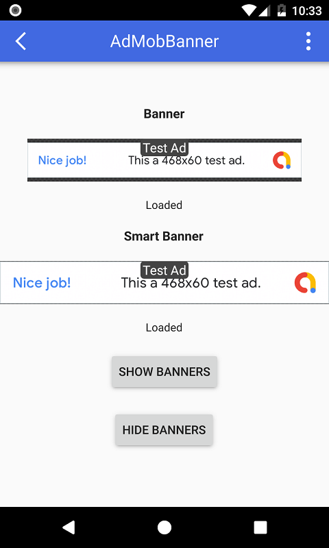AdMobInterstitial
This tool allow to show AdMob interstitial inside QML app.
Official documentation about AdMob interstitial is here, please read before continue for understand the options exported by the tool. Remember for allow interstitial to be loaded your app need the following permissions:
android.permission.INTERNET android.permission.ACCESS_NETWORK_STATE android.permission.WRITE_EXTERNAL_STORAGE
In add of this you have to install the AdMob required packages through Android SDK Manager. The packages you have to install are the following:
- Google Repository
- Google Play services
- Support Repository
Than you have to add the following dependencies into your app gradle file:
dependencies {
....
implementation 'com.google.android.gms:play-services-ads:16.+'
}
Interstitial ad show on full screen but you have to define the AdMob unitId using the item as follow:
QtAndroidAdMobInterstitial {
id: interstitial
unitId: "admob-interstitial-unit-id"
}
The unitId is the string generated when you create a new ad unit inside the AdMob site. It's used to identify the ad connected to your app. Using this id you can know how much you earn from this ad unit.
This item generate the following signals informing regarding the ad status:
onLoadError onLoading onLoaded onClosed onClicked
The only signal passing a param is onLoadError, called in case of problem in loading ad. The param is errorId and possible values are:
ERROR_INTERNAL ERROR_NETWORK ERROR_INVALID_REQUEST ERROR_NO_FILL
Item have two function as follow:
interstitial.load() interstitial.show()
The interstitial have to be loaded before show and since loading is not immediate you have to preload a bit in advance before the time to show. You can follow the loading status through the item signals. Once revecied the onLoaded signal this mean your new interstitial is ready to be showed.
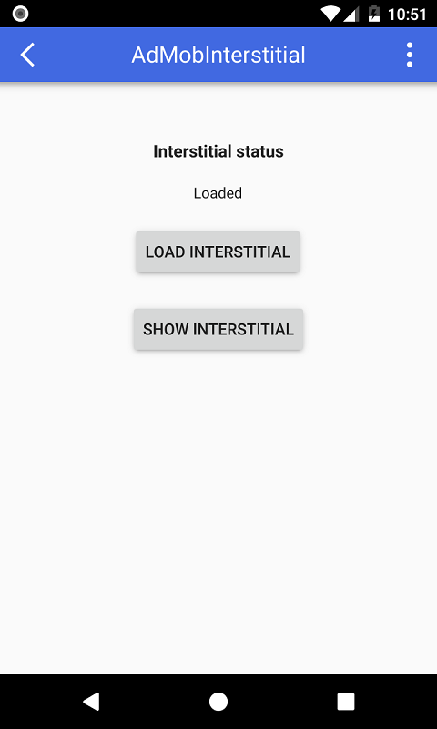This type of ad have a button allowing the user to close it than you just have to wait about the user choice. Remember also in this case the ad window will go over the QML window and you can not paint anithing on top of it.
AdMobRewardedVideo
This tool allow to show AdMob Rewarded Video inside QML app.
IMPORTANT NOTE: The current implementation of Rewarded Video API have to be used with only a single instance of the tool cause only one video can be loaded at a time. However a new set of API allowing multiple video loaded at the same time is going to be released (currently are still in beta). This is the reasons current implementation of this tool allow multiple instances. When the new API set will be released this tool code will be updated and change will be totally transparent from application side.
Official documentation about AdMob Rewarded Video is here, please read before continue for understand the options exported by the tool. Remember for allow video to be loaded your app need the following permissions:
android.permission.INTERNET android.permission.ACCESS_NETWORK_STATE android.permission.WRITE_EXTERNAL_STORAGE
In add of this you have to install the AdMob required packages through Android SDK Manager. The packages you have to install are the following:
- Google Repository
- Google Play services
- Support Repository
Than you have to add the following dependencies into your app gradle file:
dependencies {
....
implementation 'com.google.android.gms:play-services-ads:16.+'
}
Rewarded Video ad show on full screen but you have to define the AdMob unitId using the item as follow:
QtAndroidAdMobRewardedVideo {
id: rewardedVideo
unitId: "admob-rewarded-video-unit-id"
}
The unitId is the string generated when you create a new ad unit inside the AdMob site. It's used to identify the ad connected to your app. Using this id you can know how much you earn from this ad unit.
This item generate the following signals informing regarding the ad status:
onRewarded onLoadError onLoading onLoaded onOpened onClosed onStarted onCompleted onLeftApplication
The only two signals passing a param is onLoadError and onRewarded. The first is called in case of problem in loading ad. The param is errorId and possible values are:
ERROR_INTERNAL ERROR_NETWORK ERROR_INVALID_REQUEST ERROR_NO_FILL
The record is called for inform about the rewarded values. It have two params, type and amount. Check the official documentation for know the value meaning.
Item have two function as follow:
rewardedVideo.load() rewardedVideo.show()
The video have to be loaded before show and since loading is not immediate you have to preload a bit in advance before the time to show. You can follow the loading status through the item signals. Once revecied the onLoaded signal this mean your new video is ready to be played.
This type of ad have a button allowing the user to close it than you just have to wait about the user choice. Remember also in this case the ad window will go over the QML window and you can not paint anithing on top of it.
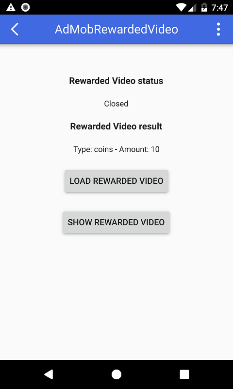After the user close the video you'll receive the rewarded info.
Images
This tool allow to retrieve the device albums and images
There are only the following functions, the first return the list of device albums and the second return the list of all images inside the album (full absolute path of each image):
import QtAndroidTools 1.0 QtAndroidImages.getAlbumsList() QtAndroidImages.getAlbumImagesList(albumId)
In particular the first function return an array of structures with the following two properties:
album.id album.name
As is possible easily undertand the first id the id of the album (to use as param for the second function) and the second is the name of the album as saved in the Android device.
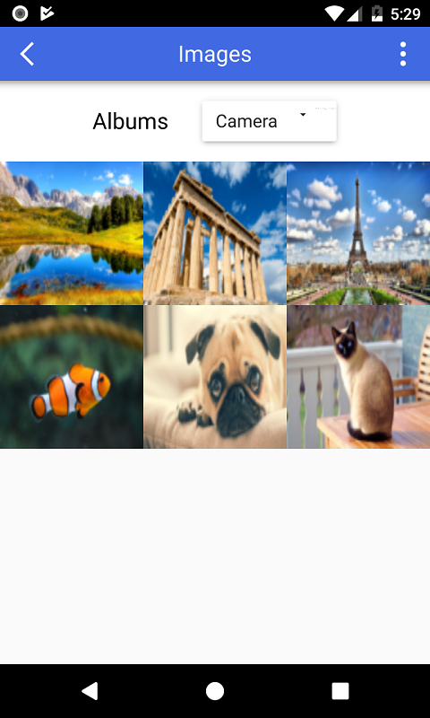Notification
This tool will show Android system notifications.
As usual for better understand how to use notification is strongly reccomended to read the official documentation here.
The tool QtAndroidNotification allow to compose and show a system notification in a very easy way as follow:
QtAndroidNotification {
id: notification
title: "Notification title"
text: "This is the notification content"
expandableText: "This is a very very very very very very very very very very long expandable content"
channelName: "Notification channel"
smallIconName: "notification_icon_name"
largeIconSource: ":/images/logo.jpg"
}
Available notification properties are the the following:
- title : title of the notification.
- text : main content of the notification. This filed is mandatory and is limited to one line size.
- expandableText : in case you need to show a text longer than a line you can set this property with your full text. Based to the Android version the result will be a little different but, in any case, this part will be showed in addition of the text content.
- channelName : in Android 8.0 and above notification have to be associated to a channel, this for allow user to disable notifications associated to the specific channel. This is a mandatory value.
- smallIconName : another mandatory value. Basically this is the special format icon showed on system bar connected to the notification. You can find many tools allow to make this icon in the right format. Unfortunately, for support old Android verion, is not possible to pass this icon from Qt resource or from a image file on storage but have to be mandatorily use the apk drawable folders. For try to simplify you don't need to get the full app path but you simply can insert the name of the icon file (without extension) you set into drawable folder (check the demo source).
- largeIconSource : large icon you can show into notification. You can use an image from Qt resource system of from a file.
In case you need to show a progress bar in the notification there are available the following additional properties:
- progressBar.max : the max value of the progress bar.
- progressBar.current : The current value of the progress bar between zero and the max value.
- progressBar.indeterminate : boolean value for set the prograss bar in the indeterminate state. The result is an indicator that has the same style as the progress bar above, except the progress bar is a continuous animation that does not indicate completion.
The progress bar is showed if you set the max value with a value greater than zero. For hide the progress bar set zero to both max nad current properties value.
The following methods can be called:
show() cancel()
Once set all the required properties you can show the notification by calling the corresponding function. The notification can be read and cleared directly by the user you can remove from app by using the cancel() call.
 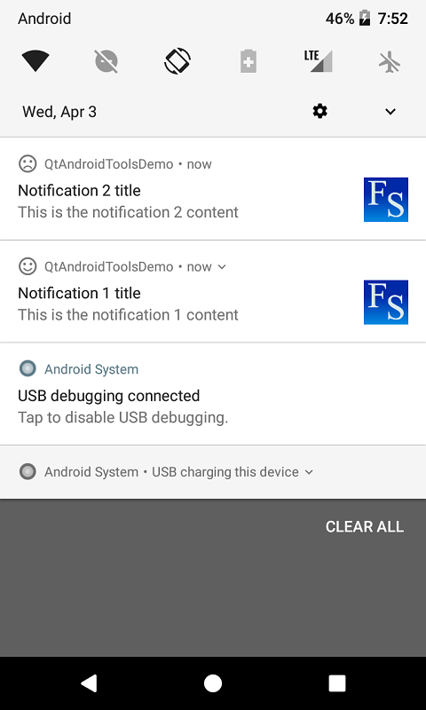
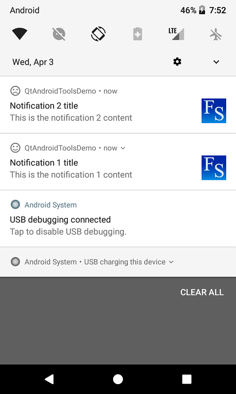
ApkInfo
This tool will return info about the apk containing the executed app.
The info regarding the app apk can be read directly from the QtAndroidApkInfo item as follow:
QtAndroidApkInfo.firstInstallTime QtAndroidApkInfo.lastUpdateTime QtAndroidApkInfo.packageName QtAndroidApkInfo.versionCode QtAndroidApkInfo.versionName QtAndroidApkInfo.requestedPermissions
Explanation about fields above can be found in the official Android documentation here. The tool export only the most important info but if you need to have some additional data you can easily add you code by using JNI interface as showed in the sources.
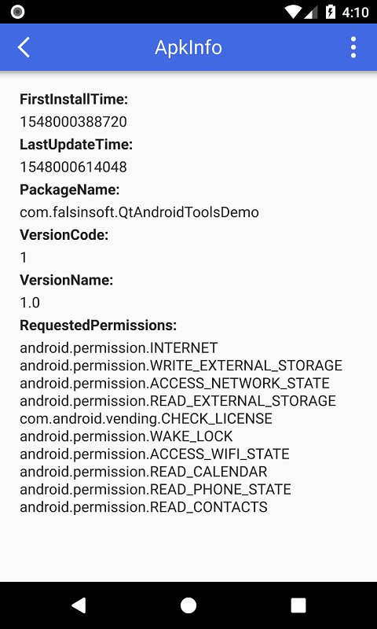BatteryState
This allow monitoring the battery level and state.
This tool install a listener for monitor the battery level and on charge state. There is nothing difficult in use since there are only two properties as follow:
import QtAndroidTools 1.0 QtAndroidBatteryState.level QtAndroidBatteryState.onCharge
Both properties support QML value binding than you can assign to a control for show always the updated value as in the demo example.
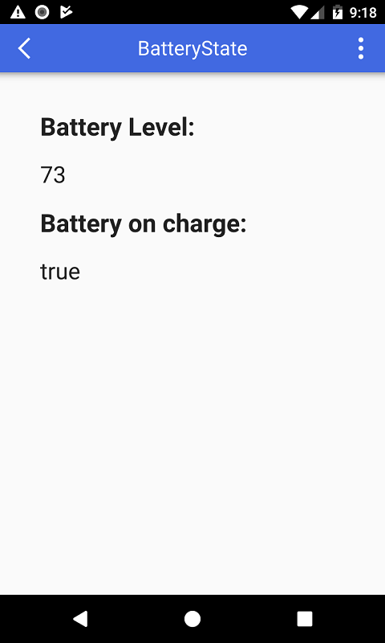Screen
This tool allow to change screen orientation.
Currently there is only one call for change screen orientation as follow:
import QtAndroidTools 1.0 QtAndroidScreen.setOrientation(orientaion)
Possible values are the following:
- SCREEN_ORIENTATION_LANDSCAPE
- SCREEN_ORIENTATION_REVERSE_LANDSCAPE
- SCREEN_ORIENTATION_SENSOR_LANDSCAPE
- SCREEN_ORIENTATION_PORTRAIT
- SCREEN_ORIENTATION_REVERSE_PORTRAIT
- SCREEN_ORIENTATION_SENSOR_PORTRAIT
Check official Android documentation about behaviour of each value.
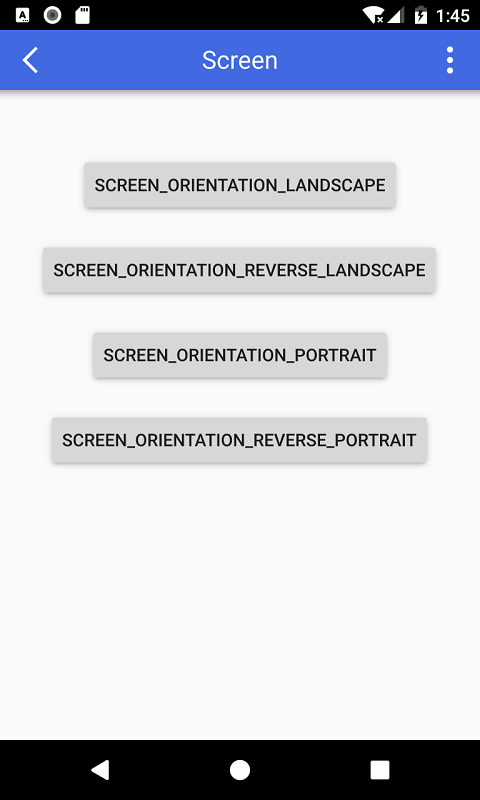SignalStrength
This tool allow to monitoring the strength of the phone signal.
This tool install a listener for monitor the phone signal. Remember for allow the library to work in this case the app need to have the following permission:
android.permission.READ_PHONE_STATE
There are two properties reporting the strength of the phone signal in row number and based to the conventional states as follow:
import QtAndroidTools 1.0 QtAndroidSignalStrength.signalStrength QtAndroidSignalStrength.signalLevel
Signal level possible states are the following:
- LEVEL_GREAT
- LEVEL_GOOD
- LEVEL_MODERATE
- LEVEL_POOR
- LEVEL_NONE
PLEASE NOTE: the report the the signal strength change doesn't arrive immediately but, instead, require some seconds to be updated after the change. Don't worry if you don't see an immediate update, just wait a little.

PlayStore
This tool allow to open Play Store app details and developer apps list.
import QtAndroidTools 1.0 QtAndroidPlayStore.openAppDetails(packageName) QtAndroidPlayStore.openDeveloperAppList(developerName)
The first call open the Play Store app with the details page of the package name app provided (in the format "com.company.appname").
NOTE: it's possible to call this method without any param, in this case the tool will use the app package name automatically.
The second call will open Play Store listing all the apps connected with the developer name passed in the param.
GoogleAccount
This tool allow to signin using one of the Google accounts currently registered in the device. Please, read carefully the official documentation for knwo how the sigin procedure work here. The tool export the basic methods for easily signin to the last signed account or a new one as the official documentation explain:
import QtAndroidTools 1.0 QtAndroidGoogleAccount.signIn(scopeName) QtAndroidGoogleAccount.signInSelectAccount(scopeName) QtAndroidGoogleAccount.signOut() QtAndroidGoogleAccount.revokeAccess()
The second method signInSelectAccount allow to select one of the registered accounts to signin. If only one Google account is present in the device it will be selected automatically. In case of more than one accounts the system activity will start for allow user to select the desired account. Once signedin the app, at each next start, will have only to call the first method to be signedin again with the same account without any other request to user. If you want to signedout and allow to request again the user permission just use the last two methods. After call the signin procedure you have to wait for result through the following signals:
onSignedIn onSignedOut
The first signal have the signInSuccessfully param informing about the operation result. Once signed successfull you can read the account info using the following fields:
QtAndroidGoogleAccount.signedInAccount.id QtAndroidGoogleAccount.signedInAccount.displayName QtAndroidGoogleAccount.signedInAccount.email QtAndroidGoogleAccount.signedInAccount.familyName QtAndroidGoogleAccount.signedInAccount.givenName QtAndroidGoogleAccount.signedInAccount.photo
The photo field export the binary image of the account. For show in a standard Image control you can use the generic image provider as follow:
QtAndroidTools.insertImage("AccountPhoto", QtAndroidGoogleAccount.signedInAccount.photo);
accountPhoto.source = "image://QtAndroidTools/AccountPhoto";
For know which type of scopes use for signin you have to check the documentation cause it changes based to the Google resource you want to access in.

GoogleDrive
This tool export a basic set of methods for work with Google Drive.
PLEASE NOTE: be very careful in using these methods cause you risk deleting some important files from user's Google drive. It's important to TEST VERY WELL your app before release. I take no responsibility for any damage that can be done using these methods.
For know how to use these methods and how to configure the Google drive access you have to read the official documentation here. As first operation you have to authenticate your app by using the corresponding methods:
QtAndroidGoogleDrive.authenticate(appName, scopeName)
The method return a bool value informing the result of the operation. Scope is used to declare the type of access you want to get for Google Drive. The user must authorize the type of access requested before being able to operate. The list of possible scopes is the following, for use of each scope read the documentation here:
- SCOPE_DRIVE
- SCOPE_DRIVE_APPDATA
- SCOPE_DRIVE_FILE
- SCOPE_DRIVE_METADATA
- SCOPE_DRIVE_METADATA_READONLY
- SCOPE_DRIVE_PHOTOS_READONLY
- SCOPE_DRIVE_READONLY
- SCOPE_DRIVE_SCRIPTS
Once got the authorization to access the following methods are available:
QtAndroidGoogleDrive.getFilesList(query) QtAndroidGoogleDrive.getRootId() QtAndroidGoogleDrive.downloadFile(fileId, localFilePath) QtAndroidGoogleDrive.uploadFile(localFilePath, mimeType, parentFolderId) QtAndroidGoogleDrive.createFolder(name, parentFolderId) QtAndroidGoogleDrive.isFolder(fileId) QtAndroidGoogleDrive.moveFile(fileId, folderId) QtAndroidGoogleDrive.deleteFile(fileId)
The first method return an array of structs listing the drive files as showed in the example:
var filesList = QtAndroidGoogleDrive.getFilesList();
var rootId = QtAndroidGoogleDrive.getRootId();
filesListModel.clear();
for(var i = 0; i < filesList.length; i++)
{
var data = filesList[i];
var parentId = "null";
if(data.parents.length > 0)
{
if(data.parents[0] === rootId)
parentId = "root";
else
parentId = data.parents[0];
}
filesListModel.append({ "id": data.id,
"name": data.name,
"mimeType": data.mimeType,
"parentId": parentId
});
}
The param query is optional. If you don't pass it the method return the list of all files inside the drive. In case you need a more specific search the documentation about how to use the query is here. All the files and folder have a string id, the method getRootId() return the id of the root folder. Is possible to download a drive file or upload inside drive. The localFilePath is a full path of the file to upload/download including the file name (also for download). The remaining methods allow to manage the drive files. Remember for download a file you must to have granted the WRITE_EXTERNAL_STORAGE permission. Two signals are used to update info regarding the download/upload operations as follow:
Connections {
target: QtAndroidGoogleDrive
onDownloadProgressChanged: {
switch(state)
{
case QtAndroidGoogleDrive.STATE_MEDIA_IN_PROGRESS:
break;
case QtAndroidGoogleDrive.STATE_MEDIA_COMPLETE:
break;
}
}
onUploadProgressChanged: {
switch(state)
{
case QtAndroidGoogleDrive.STATE_INITIATION_STARTED:
break;
case QtAndroidGoogleDrive.STATE_INITIATION_COMPLETE:
break;
case QtAndroidGoogleDrive.STATE_MEDIA_IN_PROGRESS:
break;
case QtAndroidGoogleDrive.STATE_MEDIA_COMPLETE:
break;
}
}
}
Both signal have tow params state and progress.
Sharing
This tool allow to use the Android sharing feature for share file, text and binary data.
For know how to configure and use the app for manage sharing data you have to carefully read the official documentation here for simple data and here for files. As you can read the "standard" way should be do create a dedicated activity fo each sharing data type but, cause Qt for android have only a single activity loading the native code, my solution is to use this unique main activity for all tha cases and check during startup phase if the activity has been launched for sharing purposes. Than inside the AndroidManifest.xml activity section you can add the required action based to the data you want to share (the following is from the demo app code):
<intent-filter> <action android:name="android.intent.action.SEND"/> <category android:name="android.intent.category.DEFAULT"/> <data android:mimeType="text/plain"/> </intent-filter> <intent-filter> <action android:name="android.intent.action.SEND"/> <category android:name="android.intent.category.DEFAULT"/> <data android:mimeType="image/*"/> </intent-filter> <intent-filter> <action android:name="android.intent.action.PICK"/> <category android:name="android.intent.category.DEFAULT"/> <category android:name="android.intent.category.OPENABLE"/> <data android:mimeType="image/*"/> </intent-filter>
Regarding the file sharing provider the code is the following:
<provider android:name="android.support.v4.content.FileProvider"
android:authorities="${applicationId}.qtandroidtoolsfileprovider"
android:grantUriPermissions="true"
android:exported="false">
<meta-data android:name="android.support.FILE_PROVIDER_PATHS" android:resource="@xml/sharedfilepaths"/>
</provider>
You can name the resource as you prefer but don't change the authorities name cause the tool refer to this label (qtandroidtoolsfileprovider) for configure the correct resource.
For share simple data from your app to other apps the following function are available:
QtAndroidSharing.shareText(text) QtAndroidSharing.shareBinaryData(mimeType, dataFilePath)
A system window will be showed with all the apps able to receive the data type you want to share as follow:

Once the user will select the preferred one the data will be transfered automatically.
In case you want to ask for a file shared by other apps the procedure is a bit different. At first you have to use the following function with the param the file mime type you need:
QtAndroidSharing.requestSharedFile(mimeType)
Anothe different systme window will show the apps able to share the file type you need:
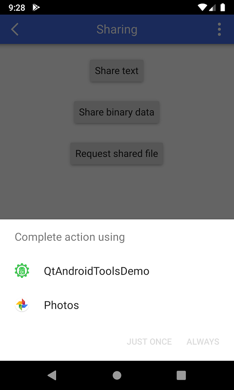The selection will open the app sharing the file and the user have to choose the file or cancel the operation. Both actions will return the two events as follow:
Connections {
target: QtAndroidSharing
onRequestedSharedFileReadyToSave: {
}
onRequestedSharedFileNotAvailable: {
}
}
The second event will inform thet the requested file is not available for various reasons (probably the user cancelled the operation). The first event will export three params named name, size and mimeType with info regarding the user selected file. Please note in this phase the file has not been imported yet. The info will help you to "decide" if the selected file can be imported (for example if the selected file is too much big in size). If you decide the file is correct you have to call the function to import and save somewhere in your app space:
QtAndroidSharing.saveRequestedSharedFile(filePath)
In case you are not interested to have the file you have to cancel the operation by call:
QtAndroidSharing.closeRequestedSharedFile()
Now the opposite part, that's mean reply to shared requested from other apps. As explained in the first part of this section the activity receiving the request is always the main one. This mean the only way to know if our app has been lanuched from another app asking for share something is to check on startup phase as follow:
Component.onCompleted: {
if(QtAndroidSharing.receivedSharingAction === QtAndroidSharing.ACTION_SEND)
{
if(QtAndroidSharing.receivedSharingMimeType === "text/plain")
{
}
else if(QtAndroidSharing.receivedSharingMimeType.startsWith("image") === true)
{
}
}
else if(QtAndroidSharing.receivedSharingAction === QtAndroidSharing.ACTION_PICK)
{
}
}
Currently the supported actions are the following:
QtAndroidSharing.ACTION_NONE QtAndroidSharing.ACTION_SEND QtAndroidSharing.ACTION_SEND_MULTIPLE QtAndroidSharing.ACTION_PICK
For the first two requests (ACTION_SEND and ACTION_SEND_MULTIPLE) you can receive the shared data sent to you by using the following functions:
QtAndroidSharing.getReceivedSharedText() QtAndroidSharing.getReceivedSharedBinaryData() QtAndroidSharing.getReceivedMultipleSharedBinaryData()
For the action requesting to share a file (ACTION_PICK) you have to show a window for allow the user to select the file he want to import into the requesting app. In the demo app we have only one file to share that the choose is only if you want or not the file:
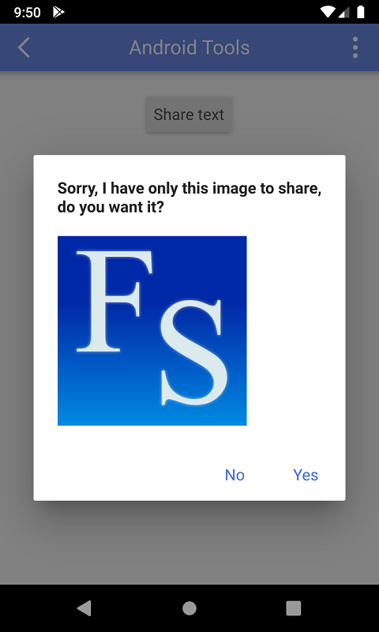After the user made a selection you have to reply by using the following function:
QtAndroidSharing.shareFile(fileAvailable, mimeType, filePath)
In case the user want the file you have to set the fileAvailable as true and provide the other params. In the opposite case (the user refused) you have to call this function by set the first param as false without provide the other params.
System
Currently this tool export only the system paths.
import QtAndroidTools 1.0 QtAndroidSystem.dataLocation QtAndroidSystem.configLocation QtAndroidSystem.downloadLocation QtAndroidSystem.musicLocation QtAndroidSystem.moviesLocation QtAndroidSystem.picturesLocation
For documentation about each path value refer to the official documentation here.